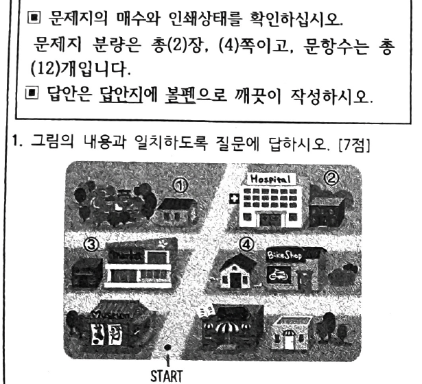
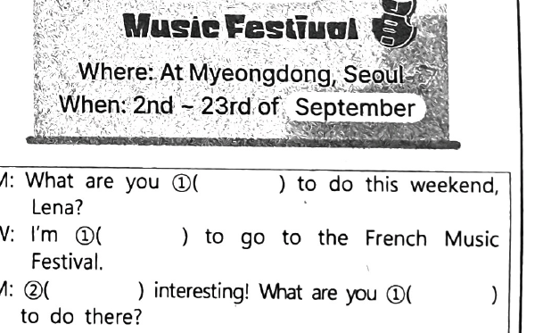
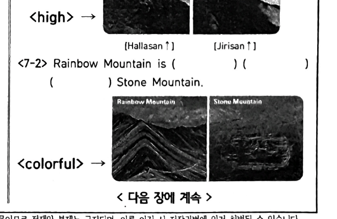
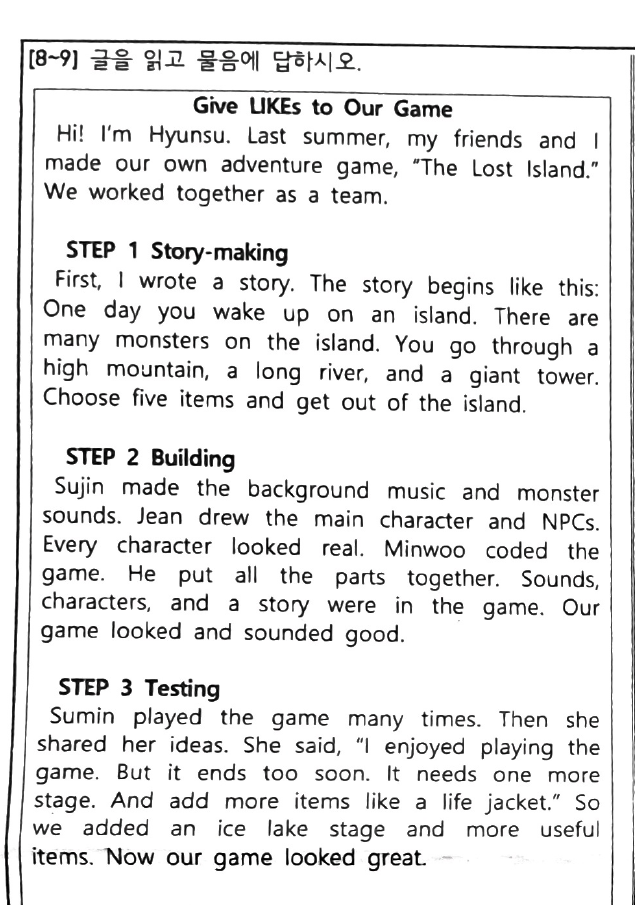
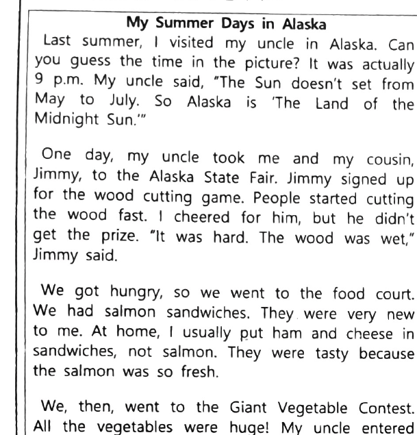
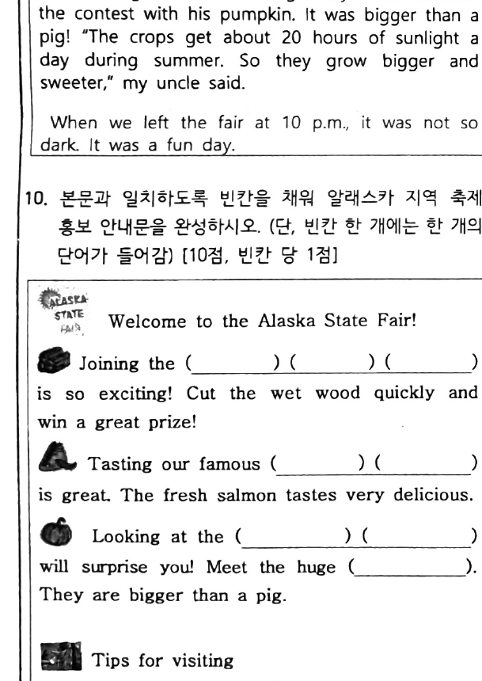

도산중학교 · 2026. 9. 15. 2교시

M: Excuse me. How can I get to the post office?
W: Go straight two blocks and turn right.
M: And then?
W: It's next to the hospital. You'll find it easily.
M: Excuse me. Where is the hospital?
W: two blocks and right. It's your .
M: Thanks.
W: No Problem.
< 대 화 1 >
M: Wow. This bookstore is really big.
W: Yeah. There are many sections. What are you interested in?
M: ㉠ ____________________ cooking these days.
W: Okay. Let's go to that section first.
< 대 화 2 >
W: Hey, Jim. What book are you reading?
M: It's a book about robots.
W: Are you into robots?
M: Yeah, I'm really interested in robots.
< 대 화 3 >
M: Look. People are playing a new game over there.
W: Let's go play it. I'm really interested in games.
M: Well, ㉡ ( I / not / good / play / games ) but I will try it.
W: Great!
※ 위 답란에는 ㉠ 빈칸 부분만 쓰거나, “I'm interested in cooking these days.” 전체 문장도 가능합니다.

M: What are you ①( ) to do this weekend, Lena?
W: I'm ①( ) to go to the French Music Festival.
M: ②( ) interesting! What are you ①( ) to do there?
W: Well, I'm ①( ) to listen to different kinds of French music. I'm also ①( ) to try French food there.
M: ②( ) fun. Is it only for this weekend?
W: No, it's ③( ) the 23rd of September.
M: Great! ①( ) to the Festival ②( ) wonderful. ④( ) I have time next week, I'll go there too. Have a great time at the festival!
※ ①~④ 번호별로 한 단어씩만 입력하세요. (①은 같은 단어가 여러 번 쓰입니다.)
Jessica: What is your science report about, Toby?
Toby: It is about robots.
Jessica: Oh, are you interested in robots?
Toby: Yes. They are really cool. What's your report about, Jessica?
Jessica: Well, I really like VR games. So I'm writing about them.
Toby: VR games are really interesting, too.
Jane: I watched a TV program about James Sweeney.
Tom: Who is he?
Jane: He is a famous game maker. I want to be someone like him. He is my ㉠(r______) (m______).
Tom: What kind of game do you want to make?
Jane: I want to make adventure games.
Tom: Sounds cool. I want to play your game someday.
He is my ( ) ( ).
질문: What are Jessica and Jane interested in?
Today, I had a great day at home and in the park. In the morning, my mom baked some cookies. The kitchen ① . I ate one right away, and it ② .
In the afternoon, I went to the park with my dog, Choco. (1)(in the park / wonderful / feel / walking). The summer sky ③ . I sat under a big tree and listened to the birds. Their singing ④ .
Today was a wonderful weekend!
<보기1>
<보기2>

Hallasan is ( ) ( ) Jirisan.
Rainbow Mountain is ( ) ( ) ( ) Stone Mountain.

Give LIKEs to Our Game
Hi! I'm Hyunsu. Last summer, my friends and I made our own adventure game, "The Lost Island." We worked together as a team.
STEP 1 Story-making: First, I wrote a story. The story begins like this: One day you wake up on an island. There are many monsters on the island. You go through a high mountain, a long river, and a giant tower. Choose five items and get out of the island.
STEP 2 Building: Sujin made the background music and monster sounds. Jean drew the main character and NPCs. Every character looked real. Minwoo coded the game. He put all the parts together. Sounds, characters, and a story were in the game. Our game looked and sounded good.
STEP 3 Testing: Sumin played the game many times. Then she shared her ideas. She said, "I enjoyed playing the game. But it ends too soon. It needs one more stage. And add more items like a life jacket." So we added an ice lake stage and more useful items. Now our game looked great.
STEP 4 Publishing: We finally published the game on the app market. We got a lot of reviews! Making a game was hard, but we did it together as a team.
Jane ★★★★★ Playing this game is so much fun! ① , getting off the island felt much scarier than before. The new ice lake stage is ㉠good than the other stages.
Jessica ★★★★ Escaping* from the island was exciting. ② swimming in the long river felt safer than before. The music sounded great. *escape:탈출하다
Tom ★★★★ I enjoyed playing the game with my friends. ③ it looked bigger than a real mountain!
Susan ★★★★★ Getting off the island was really exciting! ④ , they looked stronger than me. Crossing the long river feels ㉡easy than fighting the monsters on the island.
㉠
㉡

My Summer Days in Alaska
Last summer, I visited my uncle in Alaska. I took this picture at 9 p.m. Can you believe it? The sun was still up! Alaska is called "The Land of the Midnight Sun" because the sun doesn't set from May to July.
We went to the Alaska State Fair. My cousin Jimmy signed up for a wood cutting game. It was hard because the wood was wet. Jimmy didn't win, but it was fun to watch.
We ate at the food court. We had salmon sandwiches. It was new to me, but they were tasty because the salmon was so fresh.
We also visited the Giant Vegetable Contest. My uncle entered with his pumpkin. It was bigger than a pig! My uncle said crops grow bigger and sweeter because they get 20 hours of sunlight a day in summer.
We left at 10 p.m., and it was not dark at all.

Joining the ( ) ( ) ( ) is so exciting! Cut the wet wood quickly and win a great prize!
Tasting our famous ( ) ( ) is great. The fresh salmon tastes very delicious.
Looking at the ( ) ( ) will surprise you! Meet the huge ( ). They are bigger than a pig.
Tips for visitingEnjoying the ( ) ( ): Staying at the fair until 10 p.m. is totally fine because the sun never sets from May to July!
질문: In the text, what time was it when the writer took the picture in Alaska?
Our School Life
As middle school students, we had a good day. In the classroom, I ①(do / my homework / finish) before class. My friend Minsu sat next to me. He ②(enjoy / read / books) in the morning. During English class, our teacher asked a question. Minsu was nervous, but the teacher said, 'You ③(not / avoid / should / answer) the question.' He answered well, and everyone clapped.
각 문항 입력란 아래에도 맞힌 경우 해설 보기, 틀린 경우 정답과 한국어 해설이 표시됩니다.